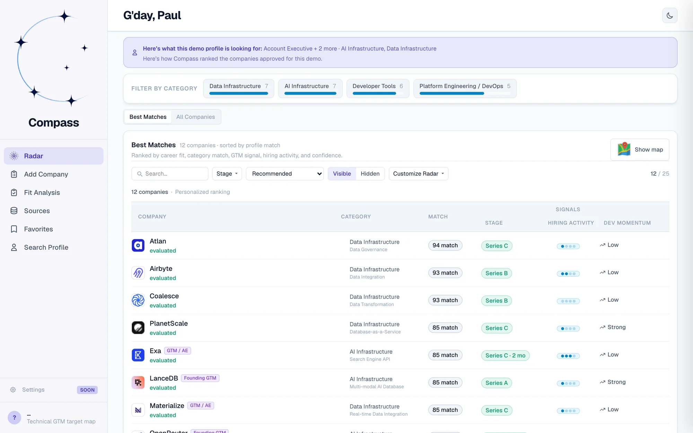
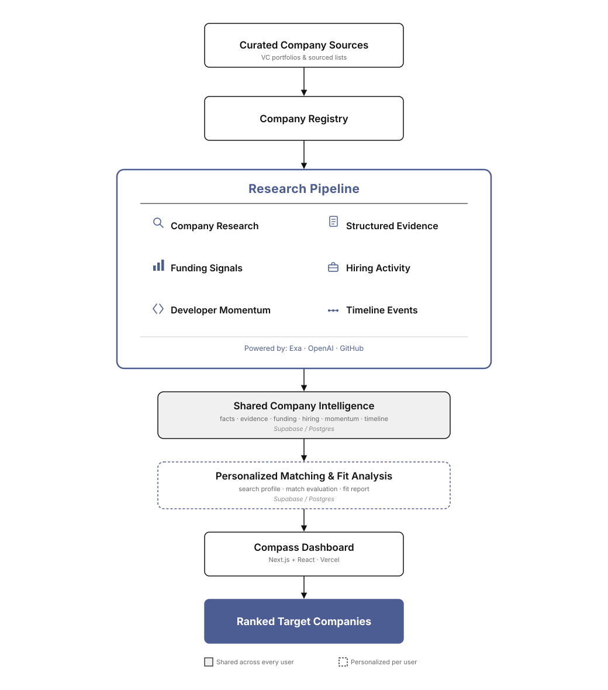
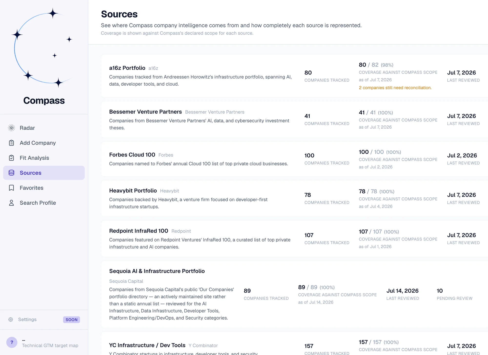
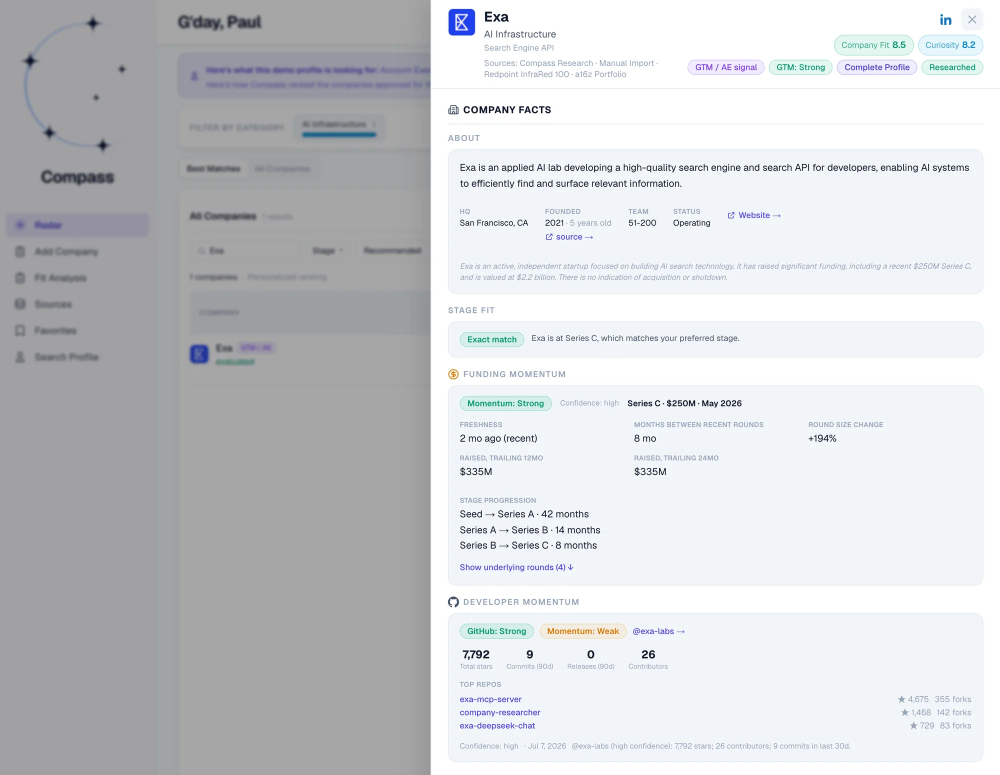
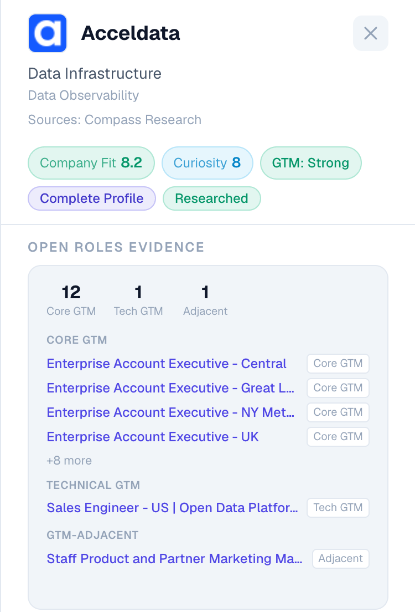

How I turned a messy company list into an evidence-backed system for deciding where to invest the next chapter of my career.
Explore the Compass demo →LinkedIn, Crunchbase, recruiter outreach, VC portfolio lists, and spreadsheets each solve different parts of a job search. None solved the part I actually got stuck on: deciding which startups were worth pursuing in the first place.
I joined Confluent's early team in San Francisco, then moved to Sydney to help grow its APAC business. After several years selling technical infrastructure there, followed by two years selling enterprise software testing at Tricentis, I realized I wanted to return to the startup world, ideally at a company solving a foundational technical problem.
It started with a Python script and a Google Sheet. The script helped me find companies, but the result quickly became another messy list: inconsistent information, no useful order, and no practical way to know where to focus.
Meanwhile, recruiters kept pitching companies that had little connection to what I wanted.
Finding open positions was not the hard part. The hard part was identifying which companies fit my career thesis: startups solving foundational, technically interesting problems, generally around Series A through C, with strong funding, hiring, and product momentum.
I had no consistent way to discover those companies, evaluate them, or track what was changing.
That Python script and Google Sheet became the starting point for Compass. I moved the list into a database and built a system that could research each company across funding, hiring, developer activity, market context, and fit.
The research itself is shared and reusable. Ranking it against my own priorities is not: Compass keeps company facts separate from personal fit, then combines them into Radar, a ranked list of which companies are worth a closer look right now, with the evidence behind every ranking visible instead of buried inside a score.

Compass turns curated company sources into structured company intelligence, then personalizes that intelligence against a search profile to produce a prioritized target list.

Compass starts from curated sources I trust: VC portfolio lists and industry lists spanning AI infrastructure, data infrastructure, and developer tools. Each company is normalized into a shared registry that every research pipeline draws from, rather than living in scattered spreadsheets. Sources are scanned on a schedule, with changes diffed against the registry so nothing gets missed.

No single metric determines whether a company is worth pursuing. Compass combines funding and stage, hiring patterns from real job postings, developer momentum, company maturity, market context, and personal fit. The value comes from interpreting those signals together: a young company with accelerating hiring and developer adoption may be more compelling than a larger, better-known company whose momentum has flattened. Each area is handled by a focused module rather than one pipeline attempting to answer every question.
Compass also accounts for differences in evidence quality. A source may be relevant without fully supporting the conclusion drawn from it, so the system separates well-supported findings from tentative indicators and open questions.
Opening a company brings the evidence together: company facts, funding history, hiring activity, and developer momentum, each with a source behind it. The ranking is therefore something I can inspect, not simply trust.


Company intelligence and personalized matching are deliberately separate layers: the facts and evidence about a company are shared and reusable, while ranking and fit are computed against my own Search Profile and never mixed back in. Splitting research into focused, single-purpose modules instead of one broad prompt involved more engineering work, but it means each module can be tested and trusted on its own. The same discipline applies to evidence: every claim carries a confidence level and a provenance trail back to its source.
The application runs on Next.js, Supabase, and Vercel. Research execution runs separately in Python on Modal, where compute scales down between runs rather than sitting idle. The public demo is read-only and isolated from my own account and data by design, not by convention.
I designed and built Compass end to end, owning the product decisions, architecture, data model, research workflows, QA, and deployment while using modern AI development tools to accelerate implementation.
Compass changed my job search from a reactive process into a deliberate one. Instead of starting with whichever recruiter or job posting appeared that week, I start with my career thesis and examine the companies with the strongest evidence first.
It also surfaced gaps in my own assumptions. Companies I found compelling at first sometimes weakened under closer inspection, while less familiar ones rose because their evidence, timing, and technical momentum were stronger.
What began as a messy spreadsheet is now a working system that tracks hundreds of companies and narrows them into a small, evidence-backed set of Best Matches. It does not predict where I will work next. It gives me a disciplined way to decide where to invest my time and attention.